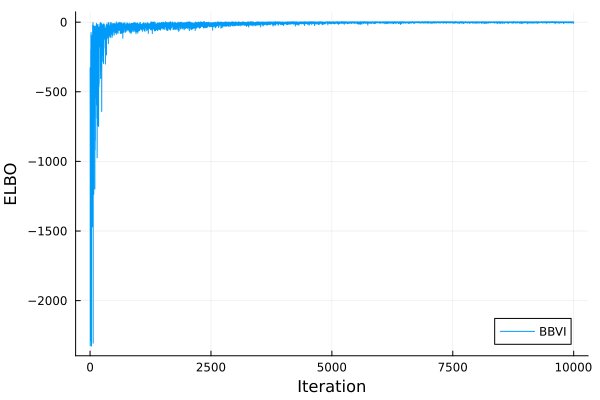

Evidence Lower Bound Maximization
In this tutorial, we will work with a normal-log-normal model.
\[\begin{aligned} x &\sim \mathrm{LogNormal}\left(\mu_x, \sigma_x^2\right) \\ y &\sim \mathcal{N}\left(\mu_y, \sigma_y^2\right) \end{aligned}\]
BBVI with Bijectors.Exp bijectors is able to infer this model exactly.
Using the LogDensityProblems interface, we the model can be defined as follows:
using LogDensityProblems
using SimpleUnPack
struct NormalLogNormal{MX,SX,MY,SY}
μ_x::MX
σ_x::SX
μ_y::MY
Σ_y::SY
end
function LogDensityProblems.logdensity(model::NormalLogNormal, θ)
@unpack μ_x, σ_x, μ_y, Σ_y = model
return logpdf(LogNormal(μ_x, σ_x), θ[1]) + logpdf(MvNormal(μ_y, Σ_y), θ[2:end])
end
function LogDensityProblems.dimension(model::NormalLogNormal)
return length(model.μ_y) + 1
end
function LogDensityProblems.capabilities(::Type{<:NormalLogNormal})
return LogDensityProblems.LogDensityOrder{0}()
endLet's now instantiate the model
using LinearAlgebra
n_dims = 10
μ_x = randn()
σ_x = exp.(randn())
μ_y = randn(n_dims)
σ_y = exp.(randn(n_dims))
model = NormalLogNormal(μ_x, σ_x, μ_y, Diagonal(σ_y .^ 2));
nothingSince the y follows a log-normal prior, its support is bounded to be the positive half-space $\mathbb{R}_+$. Thus, we will use Bijectors to match the support of our target posterior and the variational approximation.
using Bijectors
function Bijectors.bijector(model::NormalLogNormal)
@unpack μ_x, σ_x, μ_y, Σ_y = model
return Bijectors.Stacked(
Bijectors.bijector.([LogNormal(μ_x, σ_x), MvNormal(μ_y, Σ_y)]),
[1:1, 2:(1 + length(μ_y))],
)
end
b = Bijectors.bijector(model);
binv = inverse(b)
nothingLet's now load AdvancedVI. Since BBVI relies on automatic differentiation (AD), we need to load an AD library, before loading AdvancedVI. Also, the selected AD framework needs to be communicated to AdvancedVI using the ADTypes interface. Here, we will use ForwardDiff, which can be selected by later passing ADTypes.AutoForwardDiff().
using Optimisers
using ADTypes, ForwardDiff
using AdvancedVIWe now need to select 1. a variational objective, and 2. a variational family. Here, we will use the RepGradELBO objective, which expects an object implementing the LogDensityProblems interface, and the inverse bijector.
n_montecaro = 10;
objective = RepGradELBO(n_montecaro)RepGradELBO(entropy=ClosedFormEntropy(), n_samples=10)For the variational family, we will use the classic mean-field Gaussian family.
d = LogDensityProblems.dimension(model);
μ = randn(d);
L = Diagonal(ones(d));
q0 = AdvancedVI.MeanFieldGaussian(μ, L)
nothingAnd then, we now apply the bijector to the variational family.
q0_trans = Bijectors.TransformedDistribution(q0, binv)
nothingPassing objective and the initial variational approximation q to optimize performs inference.
n_max_iter = 10^4
q_avg_trans, q_trans, stats, _ = AdvancedVI.optimize(
model,
objective,
q0_trans,
n_max_iter;
show_progress=false,
adtype=AutoForwardDiff(),
optimizer=Optimisers.Adam(1e-3),
);
nothingq_avg_trans is the final output of the optimization procedure. If a parameter averaging strategy is used through the keyword argument averager, q_avg_trans is be the output of the averaging strategy, while q_trans is the last iterate.
The selected inference procedure stores per-iteration statistics into stats. For instance, the ELBO can be ploted as follows:
using Plots
t = [stat.iteration for stat in stats]
y = [stat.elbo for stat in stats]
plot(t, y; label="BBVI", xlabel="Iteration", ylabel="ELBO")
savefig("bbvi_example_elbo.svg")
nothing
Further information can be gathered by defining your own callback!.
The final ELBO can be estimated by calling the objective directly with a different number of Monte Carlo samples as follows:
estimate_objective(objective, q_avg_trans, model; n_samples=10^4)0.0044934463254655554